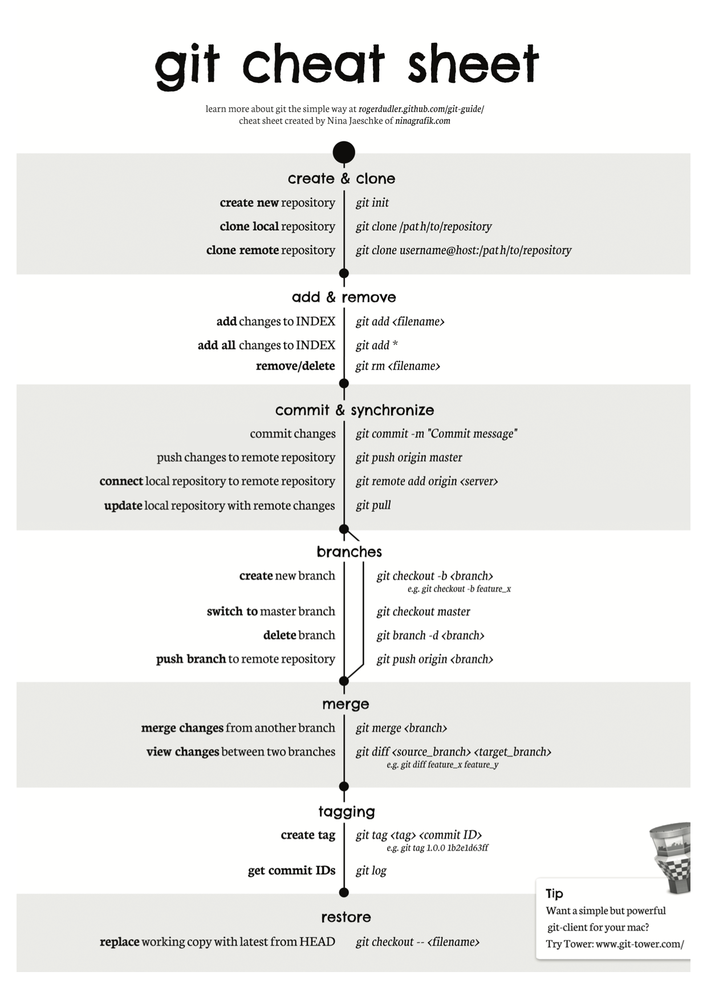
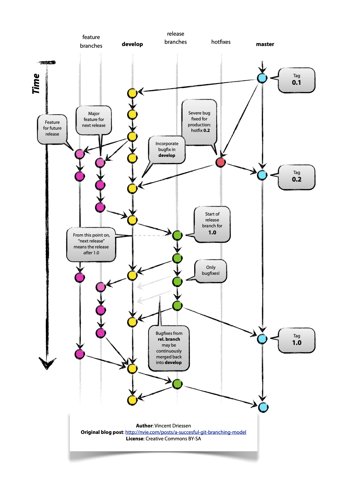

Introduzione
Git è un software di controllo versione distribuito utilizzabile da interfaccia a riga di comando, creato da Linus Torvalds nel 2005. Git nacque per essere un semplice strumento per facilitare lo sviluppo del kernel Linux ed è diventato uno degli strumenti di controllo versione più diffusi. La sua progettazione si ispirò a strumenti (allora proprietari) analoghi come BitKeeper e Monotone.
[!TIP|style:flat|label:Install on MacOSX|icon:fa fa-apple fa-2x]
[!TIP|style:flat|label:Install on WinOS|icon:fa fa-windows fa-2x]
[!TIP|style:flat|label:Install on Linux|icon:fa fa-linux fa-2x]

Configurazione globale di git
Prima di inziare ad utilizzare Git è necesario definire la configurazione specificando le credenziali (Nome ed Email) che verranno utilizzate nei repository per qualsiasi operazione su di esso. In una console cmd o bash esegui
$> git config --global user.name="nomecognome"
$> git config --global user.email="indirizzo@email.com"
questi due comandi definiranno a livello globale l'utente che interagirà con il server git e non vanno eseguito ogni volta. Questa operazione è possibile eseguirla anche tramite client Git Fork o qulasiasi altro client.
Esegui il comando
$> git config --global -l
per vedere la congifurazione corrente di git sulla macchina e
$> git config --global -e
per editarla.
Generazione delle chiavi ssh
Per interagire con git è necessario la generazione delle chiavi ssh, questa cosa alcuni client (git fork) permettono di farla via interfacca, ma seguendo quanto scritto fin ora in console esegui
- Genera una nuova chiave ssh
$> ssh-keygen -t rsa -b 4096 -C "indirizzo@email.com"> Generating public/private rsa key pair. - Quando ti viene chiesto "Enter a file in which to save the key..." press Enter o specificare un file diverso dove salvare la chiave ad esempio se si utilizzano chiavi diverse, ed insire una passphrase o Enter se si vuole lasciare vuoto (consigliato).
> Enter a file in which to save the key (/Users/you/.ssh/id_rsa): [Press enter] > Enter passphrase (empty for no passphrase): [Type a passphrase] > Enter same passphrase again: [Type passphrase again] - Aggiungi la chiave pubblica appena generata al server git nei settings del profilo.
- Aggiungi la chiave privata all'ssh-agent
> ssh-add -K ~/.ssh/id_rsa - Fatica!
Git Flow
GIT Flow è un flusso di sviluppo, ideato da Vincent Driessen, che descrive un modello di diramazione, (branching), ben preciso costruito intorno al concetto di release software.

Main branches
Questo modello di workflow prevede due master branch, “develop” utilizzato appunto per lo sviluppo, e “master” per i rilasci ufficiali (release).
Questi due branch assolvono il compito di “historical branch”, cioè essi devono detenere la storia pulita del progetto, a prescindere dagli sviluppi di nuove feature e hotfix, che altrimenti confluirebbero senza filtri sul ramo principale, rendendo meno comprensibile la storia del progetto e quindi più difficoltose operazioni di reversione (revert) a stati precedenti.

Feature branch
[!TIP|label:Convenzione]
- I nomi dei feature branch iniziano con: feature/feature-name
- Può diramarsi da: develop
Un “feature branch”, aggiunge una nuova funzionalità (feature) al software, questi branch devono sempre essere derivati dal branch “develop” e rappresentano nuove funzionalità che si intende implementare (o nuovi task da lavorare).
Utilizzando questo modello la storia del branch di sviluppo develop risulterà sempre pulita, con una sola commit a chiusura della feature, che conterrà solo l’informazione relativa all’aggiunta della nuova funzionalità implementata.
Per creare un nuovo feature branch esegui
$> git checkout -b feature/myfeature develop
Una volta terminato lo sviluppo della nuova features
$> git checkout develop
$> git merge --no-ff feature/myfeature
$> git branch -d feature/myfeature
$> git push origin develop
il flag --no-ff fa sì che il merge crei sempre un nuovo oggetto commit e questo evita di perdere informazioni storiche di un feature branch.
Il comando git branch -d nomeDelBranch elimina il branch dopo il merge e il -git push origin develop_ allinea il repository remoto a quello locale effettuando un aggiornamento.
In base alle dimensioni del team è possibile mantenere più feature branch contemporaneamente, a patto di riportarli correttamente e in tempi auspicabilmente brevi sul branch di sviluppo. Di norma un singolo sviluppatore si concentra sul rilascio di una feature per volta. Se una feature dovesse restare aperta per molto tempo è consigliabile periodicamente fare un merge da develop.

Release branch
[!TIP|label:Convenzione]
- I nomi dei release branch iniziano con: release/release-name
- Può diramarsi da: develop
Quando il ramo di develop è maturo al punto da poter o dover effettuare un rilascio di codice è possibile staccare una release o release branch, questi branch devono sempre essere derivati dal branch “develop” e rappresentano un nuovo rilascio di codice (produzione). Una volta staccata una release e chiusa viene effettuato il merge su develop e su master e viene cancellato il branch di rilascio
Per creare un nuovo release branch esegui
$> git checkout -b release/v1.2.0 sviluppo
$> git commit -a -m "Numero della versione in batch a 1.2.0"
Quando siamo pronti ad effettuare il vero e proprio rilascio, ad esempio al termine dei test, per chiudere la release e staccare un tag esegui
$> git checkout master
$> git merge --no-ff release/v1.2.0
$> git tag -a v1.2.0
Se vuoi è possibile utilizzare il flag -s o -u <\key> per firmare il tag in modo crittografico.
La release a questo punto è completa e taggata per riferimenti futuri, tuttavia, è necessario ricollegarle a develop
$ git checkout develop
$ git merge --no-ff release/v1.2.0
A questo punto abbiamo davvero finito e il ramo di rilascio potrebbe essere rimosso, poiché non ne abbiamo più bisogno:
$ git branch -d release/v1.2.0
Hotfix branch
[!TIP|label:Convenzione]
- I nomi degli hotfix branch iniziano con: hotfix/hotfix-name
- Può diramarsi da: master
I rami di hotfix sono molto simili ai rami di rilascio perché pensati per preparare una nuova versione di produzione non pianificata.
Nascono dalla necessità di agire immediatamente sulla versione in produzione. Quando un errore critico deve essere risolto immediatamente, un ramo di hotfix può essere stacccato dal ramo master in corrispondenza del tag corrispondente alla vesione di produzione da correggere, solitamente l'ultima release.
L'essenza è che il lavoro dei membri del team sul ramo di develop può continuare, mentre in maniera completamente asincrona qualcun'altro sta preparando una rapida correzione della produzione.
$> git checkout -b hotfix/v1.2.1 master
$> git commit -a -m "Version number 1.2.1"
Viene corretto il bug e fatta la commit del fix
$> git commit -m "Fixed production - issue #12345"
Al termine, il bugfix deve essere nuovamente mergiato sul master, ma deve essere mergiato anche su develop al fine di assicurarciche la correzione venga inclusa anche nella prossima versione rilascita.
Innanzitutto, aggiorna master tagga la versione.
$> git checkout master
$> git merge --no-ff hotfix/v1.2.1
$> git tag -a v1.2.1
E includi il bugfix anche su develop
$> git checkout develop
$> git merge --no-ff hotfix/v1.2.1
Infine, rimuovi il ramo temporaneo:
$> git branch -d hotfix/v1.2.1

Versionamento semantico
Il versionamento semantico (semantic versioning) è un semplice schema di denominazione dei rilasci che ruota attorno a tre numeri: major, minor e patch.
Nulla di nuovo, ma buona regola è adottare alcuni standard affinché le cose siano comprensibili a molti (a tutti sarebbe troppo), detto ciò il versionamento semantico sarebbe una schema di denominazione dei rilasci che ruota intorno a tre numeri major, minor e patch.
Secondo lo schema proposto fin'ora potremmo dire che i tag dei rilasci potrebbero essere così intesi:
- Dato un numero di versione MAJOR.MINOR.PATCH (v1.1.2)
- In caso di rilasci consistenti, ossia rilasci che cambiano in maniera apprezzabile il funzionamento del codice anche in modo non retrocompatibile, andremo ad incrementare il numero di major versioning
- In caso di rilasci minori, ossia aggiunte di nuove feature che non pregiudicano la retrocompatibilità del codice, andremo ad incrementare il numero di minor versioning
- In caso di rilasci di patch o hotfix, andremo ad incrementare il numero di patch
A questo potrebbe seguire un numero di build del tutto facoltativa come potrebbe essere ad esempio indicare una release candidate v1.1.2-rc1 oppure una snapshot di un branch indicante la data feature-xyz-202027041824
Per approfondimenti semver.org